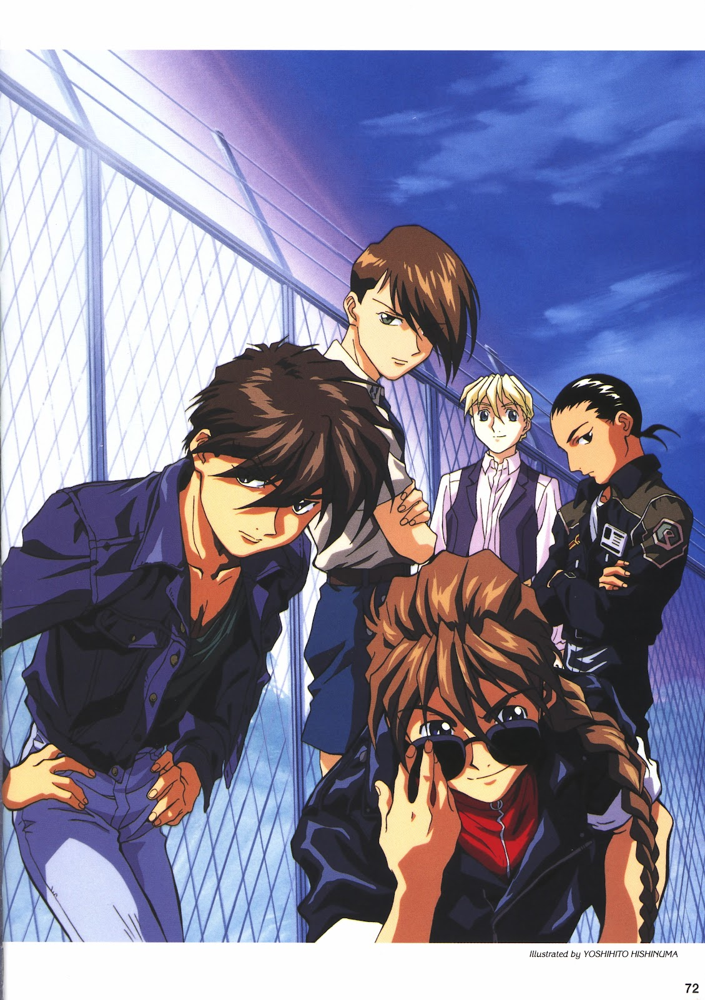
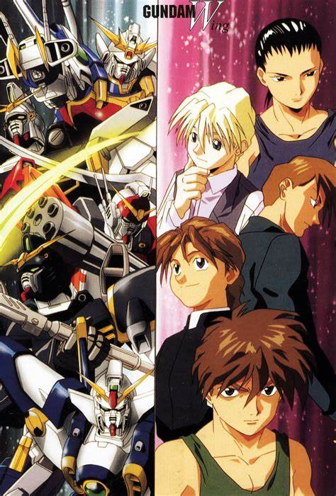

Gundam Wing
The only thing we're allowed to believe is that we won't regret the choice we made.”. “The world is merciless, and it's also very beautiful.”. “You can't change anything unless you can discard part of yourself too.
The story of Gundam Wing begins in the year After Colony 195 with the start of Operation Meteor, five disgruntled scientists' plan for revenge against the tyrannical OZ military organization for their oppression over the space colonies. The operation involves five young boys who have each been chosen and trained by one of the five rogue scientists, then sent to Earth independently in extremely advanced Mobile Suits, one designed by each of the scientists, known as "Gundams". Their mobile suits are called Gundams because they are constructed from a rare and astonishingly durable material known as Gundanium Alloy, which can only be created in outer space.
Soliders
This world has no such thing as God. "There are things we must do while we're still alive. This is how we honor the dead
 Learn More.....Patriot
For the words of our ancestors in the past can surely influence our words and actions in the present."
.jpg) Learn More.....
Learn More.....
Lost
Just watch me! I'm gonna live right to the bitter end! I'll live the hard life of a warrior!
.jpg) Learn More.....
Learn More.....